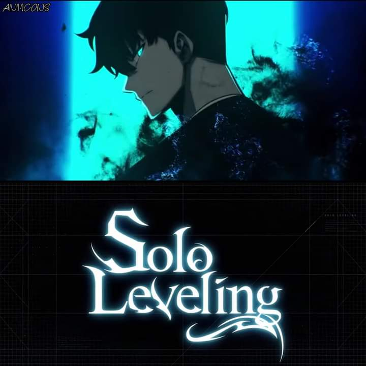

SOLO LEVELLING
Solo Leveling is an anime series based on the Korean web novel and webtoon of the same name, produced by the studio A-1 Pictures. It follows the story of Sung Jinwoo, a famously weak hunter who is given the rare ability to "level up" after a near-death experience in a dungeon.
Plot summary
In a world where portals known as "Gates" connect Earth to a realm of monsters and magic, humans with special powers called "Hunters" emerge to fight these beasts.
The main story centers on Sung Jinwoo, who is widely known as the "Weakest Hunter of All Mankind".
The Double Dungeon: Jinwoo's miserable life as an E-Rank Hunter changes when he and his party get trapped in an exceptionally powerful double dungeon. After everyone else is killed or injured, Jinwoo faces death alone and is selected by a mysterious entity called "the System".
The Rise of a Hunter: The System gives Jinwoo the unique ability to level up, a power no other Hunter possesses. It provides him with game-like quests, penalties, and rewards, pushing him to train and grow stronger.
The Shadow Monarch: As he completes quests and levels up, Jinwoo becomes an immensely powerful necromancer, inheriting the title of Shadow Monarch. He gains the ability to extract shadows from defeated enemies and command them as his own personal army.
A Global Phenomenon: The story follows Jinwoo as he transforms from the weakest to the most powerful Hunter in the world, fighting monsters, uncovering the secrets of the dungeons, and confronting the other Monarchs who seek to destroy humanity.
Production and release details
Original work: Solo Leveling was originally a South Korean web novel by Chugong, which was later adapted into a popular webtoon with art by DUBU (Redice Studio).
Studio and Staff: The anime is produced by the renowned studio A-1 Pictures. Key staff include director Shunsuke Nakashige and composer Hiroyuki Sawano.
Seasons:
Season 1: Consisting of 12 episodes, it premiered on January 6, 2024.
Season 2: Arise from the Shadow: A second season with 13 episodes aired from January 5 to March 30, 2025.
Where to watch: The anime is licensed by Crunchyroll, which streams the series outside of Asia. It can also be found on the Crunchyroll Amazon Channel.
Key characters
Sung Jinwoo: The main protagonist, who rises from the world's weakest E-Rank Hunter to become the immensely powerful Shadow Monarch.
Cha Hae-In: A powerful S-Rank Korean Hunter who develops romantic feelings for Jinwoo. She is a master swordswoman with a superhuman sense of smell.
Sung Il-Hwan: Jinwoo's father, who disappeared years earlier and is later revealed to be a powerful Hunter with a connection to the series' divine forces.
Igris: One of Jinwoo's most loyal shadow soldiers, extracted from the "Bloodred Knight" who guards an empty throne.
Beru: The former Ant King, who becomes a formidable and devoted shadow soldier in Jinwoo's army.